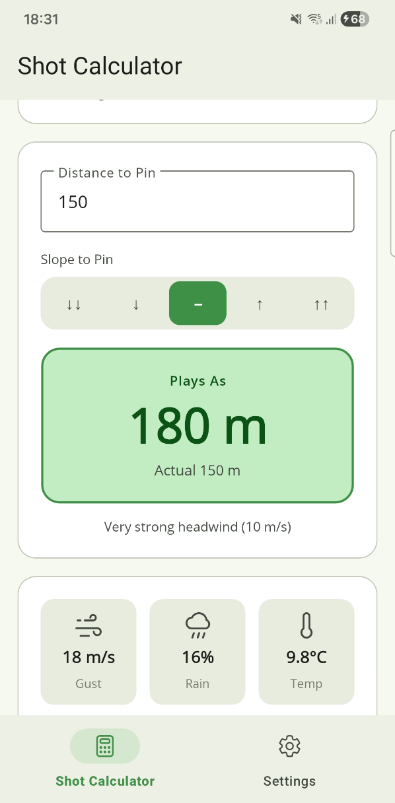
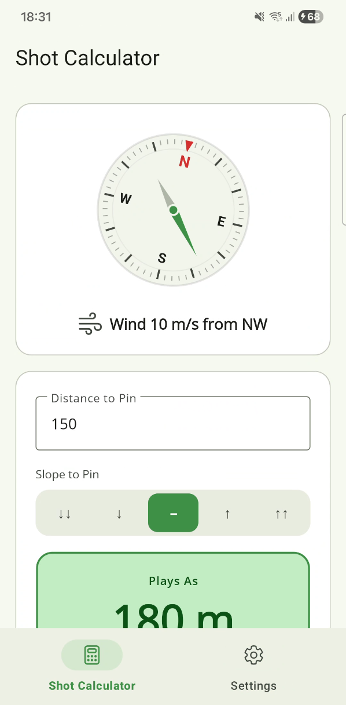
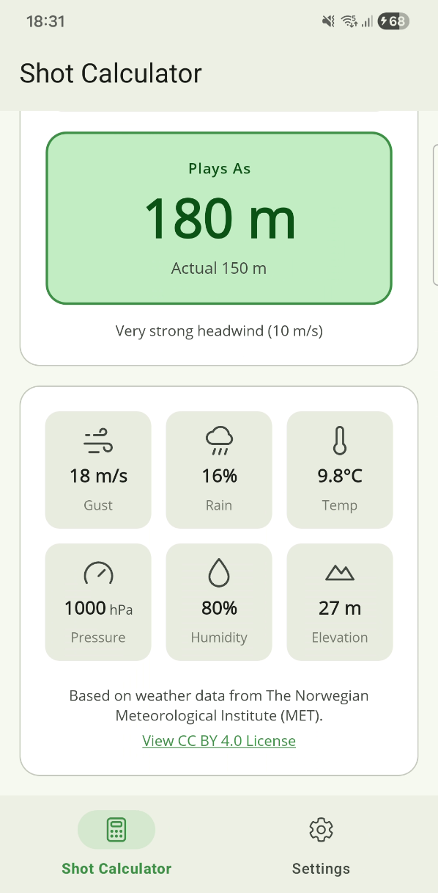
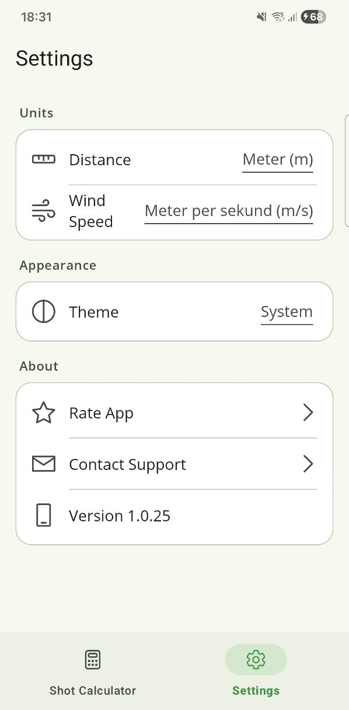

ForeWind · Golf wind calculator
Know how far it really plays.
Point your phone at the pin and enter the distance. ForeWind turns the live wind where you're standing into the number to club for.


Free · pay once to remove the ad

The problem
Your watch knows the distance. It doesn't know the wind.
A GPS watch or a rangefinder gives you the yardage to the pin. Into a stiff breeze that number can be two clubs wrong. ForeWind doesn't replace them — it takes the distance they give you and tells you how it plays today.
-
1 · Point it down the line
Hold the phone flat and aim the top of it at your target. The compass takes that as your shot line and compares it with where the wind is coming from.
-
2 · Enter the distance
Type in the yardage your watch or rangefinder gave you, and tap the slope to the pin — five steps, from steep downhill to steep uphill.
-
3 · Club for what it plays
The Plays As figure is the distance to hit. 150 m into a 10 m/s headwind plays like 180 m — a gap most golfers have paid for before.
-
Point it down the line
The compass is what makes the number yours. A breeze from the left of the green counts differently from one straight in your face, so ForeWind reads the wind against the line you're actually hitting, not just its speed. If the heading drifts, it asks you to calibrate with a quick figure-8.

-
Weather from where you're standing
Wind, gusts, temperature, pressure, humidity, chance of rain and elevation, for your exact spot, from the Norwegian Meteorological Institute. Each reading is kept for a few minutes, so a patchy signal on the back nine doesn't leave you guessing.

-
Metres or yards, your call
Distance and wind speed are set separately, so yards with m/s is fine if that's how you think. Light, dark or follow the phone. In English, Swedish, German and French, chosen from your phone's language.

How the number works
Three adjustments, one number.
Wind is the big one, but it isn't the only thing that changes how far a ball flies.
-
Wind, by its true angle
The adjustment slides smoothly from headwind to crosswind, with no jump between quadrants. A tailwind gives back about half what the same headwind takes, because that's how a golf ball behaves.
-
Slope to the pin
Uphill adds the full height to the shot; downhill gives back only half, because a ball dropping onto a green doesn't run out the way the geometry alone suggests.
-
Air density, quietly
Cold, heavy air flies shorter; warm air and altitude fly further. ForeWind folds that into the number from the temperature, pressure and elevation it already has. There's no setting to forget.
Crosswind drift, trees and the wind above the treeline are still yours to read. The number is a well-founded starting point for club selection, not a measurement.
No account. No server of mine.
Your settings stay on your phone. Two things leave it: your position, sent to the Norwegian Meteorological Institute to fetch the forecast, and the banner ad, which Google serves. No analytics, no sign-in, and location only while the app is open.
ForeWind is free, and the banner is what pays for it. A one-time purchase takes it away for good — no subscription, and nothing else to buy. Every calculation feature is free for everyone.
Help
Something not working?
The support page covers location and weather, a compass that won't settle, and restoring the Remove Ads purchase. If none of it helps, one person reads the mailbox.
Or email forewind@nilbytestudio.com.